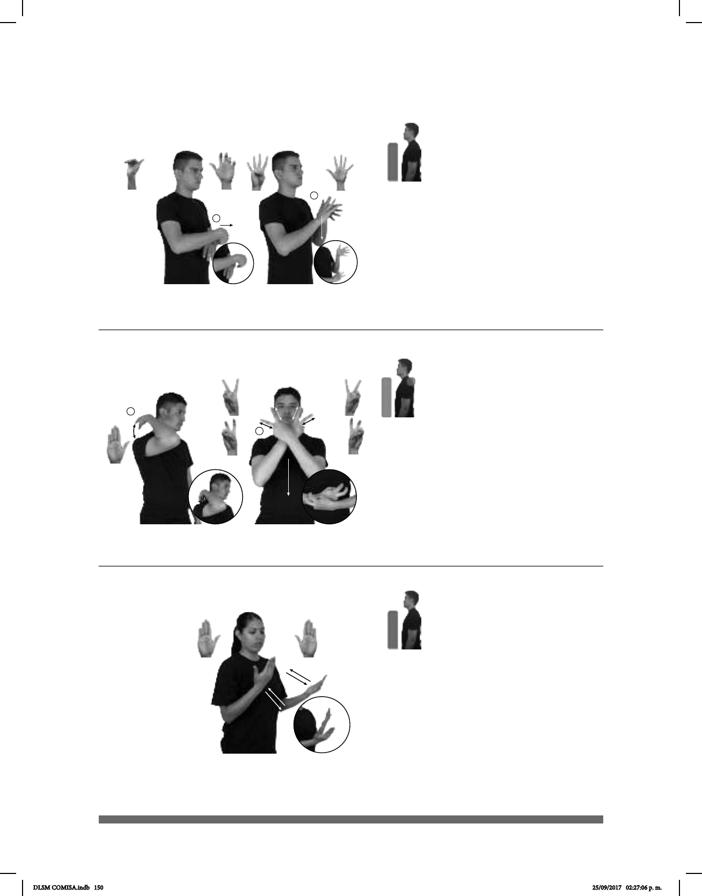

150
Seña: SB
MD y MB B-P.2
MD y MB palmas
hacia arriba.
MD y MB a la altura
del pecho.
MD y MB recto
hacia enfrente alternadamente.
Rotación de
cabeza de derecha a izquierda.
1. v. tr. Examinar dos
o más elementos para apreciar sus
semejanzas y diferencias. 2. sust.
f. Acto de comparar o poner frente
a frente dos o más objetos o seres,
para buscar sus diferencias y sus
semejanzas.
(B-P 120)
1
2
ANTES ELEGIR pro-NOSOTROS-DE-DOS DEBER COMPARAR
Debemos comparar antes de elegir.
1
2
(B-P 118)
TODO PRODUCTO CÓDIGO-DE-BARRAS ETIQUETA HABER
Todos los productos se etiquetan con un código de barras.
Seña: SC: I. y II. SB
I. MD B-P.9; MB 5.11; II.
MD 4.1, MB 5.1
I. MD palma hacia adentro.
MB palma hacia abajo; II. Las palmas se
encuentran frente a frente.
I. A la altura del pecho, MD
sobre MB; II. MD a la altura del hombro.
MB del pecho a la cintura.
I. La MD se mueve de atrás
II. MD recto.
sust. m. Código basado en la
representación de un conjunto de líneas
paralelas de distinto grosor y espaciado que
juntas contienen una determinada
información
Seña: SC: I. SM; II. SS
I. B-P.2; II. Seña que
cambia de 2.2 a 2.8
I. Palma contra la espal-
da; II. MD y MB palmas hacia adentro.
I. Sobre la espalda; II. Del
cuello a la cintura, las muñecas
cruzadas.
I. La mano golpea la
espalda repetidamente; II. Recto
mientras los dedos índice y medio se
retraen simultáneamente.
sust. f. Eje del esqueleto,
espina dorsal de los animales.
1
2
(B-P 119)
dm-JUAN COLUMNA-VERTEBRAL pro-ÉL DOLER
A Juan le duele la columna vertebral.
DLSM COMISA.indb 150 25/09/2017 02:27:06 p. m.